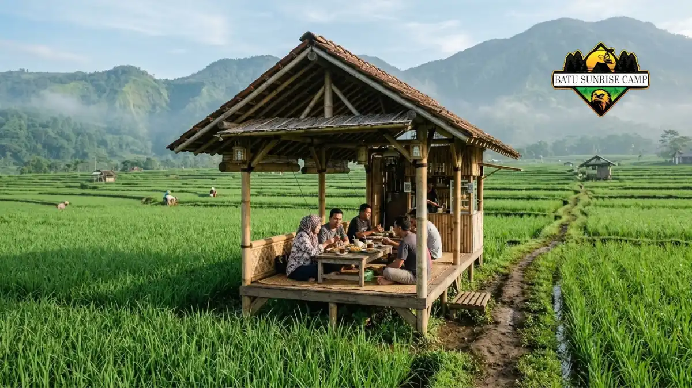

Tempat cafe yang dekat dengan Coban Rondo antara lain Dancok Cafe dan Greenrock Cafe di dalam kawasan wisata, serta Cafe Sawah di Pujon Kidul.
Apa Saja Tempat Cafe yang Dekat dengan Coban Rondo?
Cafe terdekat dari Coban Rondo adalah Dancok Cafe dan Greenrock Cafe di dalam kawasan wisata, disusul Cafe Sawah di Desa Pujon Kidul.
Pilihan cafe di sekitar Coban Rondo terbagi menjadi dua kelompok. Kelompok pertama berada langsung di kawasan wisata Coban Rondo di Desa Pandesari. Kelompok kedua berada di area Pujon yang lebih luas, misalnya di Desa Wisata Pujon Kidul.
Dancok Cafe dikenal dengan bangunan kayu, hammock, dan pemandangan hutan pinus.
Greenrock Cafe dikenal dengan suasana berkabut dan arsitektur bernuansa alam. Cafe Sawah menawarkan pengalaman makan di saung dengan latar sawah dan pegunungan.
Ketiganya melayani kebutuhan yang berbeda. Wisatawan yang ingin ngopi tanpa pindah lokasi cocok memilih cafe di dalam kawasan.
Wisatawan yang ingin menambah destinasi cocok melanjutkan perjalanan ke Pujon Kidul.
Apa Itu Kawasan Coban Rondo dan Mengapa Cafe di Sekitarnya Ramai?
Coban Rondo adalah air terjun setinggi sekitar 84 meter di Kecamatan Pujon, Kabupaten Malang, yang ramai karena udaranya sejuk dan fasilitas wisatanya lengkap.
Coban Rondo berada di Jalan Coban Rondo, Desa Pandesari, Kecamatan Pujon. Menurut Traveloka (Juni 2025), lokasinya berada di ketinggian sekitar 1.135 meter di atas permukaan laut.
Ketinggian tersebut membuat udara di sekitar kawasan terasa dingin dan sering berkabut.
IDN Times (Juli 2025) melaporkan jam operasional Coban Rondo pukul 07.30-17.00 WIB, dengan tiket Rp35.000 pada hari biasa dan Rp40.000 pada akhir pekan.
Traveloka (Juni 2025) mencantumkan angka yang berbeda untuk wisatawan domestik, yaitu Rp30.000 pada hari biasa dan Rp35.000 pada akhir pekan atau hari libur.
Perbedaan tersebut menunjukkan bahwa tarif dapat berubah menurut kebijakan pengelola dan kategori pengunjung.
Kawasan ini juga memiliki taman labirin, area bersepeda, dan aktivitas panahan.
Kombinasi wisata alam dan hawa dingin mendorong pengunjung mencari cafe untuk menghangatkan badan setelah berjalan kaki.
Itulah sebabnya cafe di sekitar Coban Rondo cenderung ramai pada akhir pekan dan musim liburan.
Cafe Mana yang Berada di Dalam Kawasan Coban Rondo?
Dua cafe yang tercatat berada di area wisata Coban Rondo adalah Dancok Cafe di Jalan Coban Rondo Nomor 274 dan Greenrock Cafe yang berkonsep alam.
Dancok Cafe, atau dikenal juga sebagai Daun Coklat Cafe, menurut Traveloka (Juni 2025) menonjolkan konsep luar ruangan dengan kursi, meja, dan bangunan dari kayu.
Cafe ini menyediakan hammock dan ayunan, serta kursi santai untuk memandang hutan pinus dan lembah Songgor.
Radar Malang (Juli 2024) mencatat menu seperti ayam sambal hijau, nasi dancok, kwetiau, nasi goreng, dan bakmie, ditambah camilan seperti kentang goreng dan roti bakar.
Greenrock Cafe, menurut Radar Malang (Juli 2024), berada di area wisata Coban Rondo dan diselimuti nuansa kabut serta hawa dingin.
Profil Instagram Greenrock Campers menyebut layanan camping, cafe, dining, dan gathering.
Pengunjung yang tertarik menginap atau berkumpul bersama rombongan dapat mempertimbangkan cafe ini.
Karena kedua cafe berada di area wisata, pengunjung umumnya perlu melewati loket masuk kawasan lebih dulu. Ketentuan ini sebaiknya dikonfirmasi langsung sebelum berangkat.

Cafe Sawah Pujon Kidul Malang dengan saung kayu di tengah hamparan sawah hijau dan pemandangan pegunungan di kejauhan.
Cafe Mana di Pujon yang Layak Dikunjungi Setelah dari Coban Rondo?
Cafe Sawah di Desa Wisata Pujon Kidul adalah pilihan populer setelah Coban Rondo karena berlatar sawah, berharga tiket terjangkau, dan sesuai untuk keluarga.
Cafe Sawah Pujon Kidul berada di Kecamatan Pujon, kecamatan yang sama dengan Coban Rondo.
Menurut Rumah123 (Maret 2025), tiket masuknya Rp12.500 per orang, sudah termasuk voucher Rp5.000, sedangkan parkir kendaraan pribadi Rp5.000.
Wahana ATV atau mini cross dikenai biaya sekitar Rp50.000 per sesi. Menurut 24Travel (30 Januari 2026), cafe ini buka setiap hari pukul 08.00-18.00 WIB.
Menunya menonjolkan masakan desa seperti mendol tempe, telur asin, dan pepes tongkol. 24Travel (Januari 2026) juga mencatat minuman tradisional di cafe ini berkisar Rp3.000-Rp8.000.
Harga-harga tersebut dapat berubah, jadi pengunjung sebaiknya memeriksa informasi terbaru.
Jika pengunjung menginginkan suasana pedesaan dan bukan hutan pinus, Cafe Sawah menjadi pelengkap yang seimbang setelah kunjungan ke air terjun.
Bagaimana Cara Memilih Cafe yang Sesuai Kebutuhan?
Cara memilih cafe dekat Coban Rondo adalah menilai lokasi, suasana, kisaran harga, jam buka, dan kesesuaian dengan anggota rombongan.
Parameter pertama adalah lokasi. Cafe di dalam kawasan Coban Rondo menghemat waktu perjalanan, sedangkan cafe di Pujon Kidul menambah durasi perjalanan tetapi memberi variasi pemandangan.
Parameter kedua adalah suasana. Dancok Cafe cocok bagi pengunjung yang menyukai hutan pinus dan spot foto kayu.
Greenrock Cafe cocok bagi pengunjung yang mencari suasana berkabut dan opsi camping. Cafe Sawah cocok bagi keluarga yang ingin anak-anak melihat sawah.
Parameter ketiga adalah kebutuhan rombongan. Rombongan besar perlu memeriksa apakah cafe menyediakan area luas atau menu prasmanan, seperti yang dicatat Radar Malang (Juli 2024) untuk Dancok Cafe. Pengunjung dengan anak kecil perlu memperhatikan toilet, parkir, dan area bermain.
Parameter keempat adalah batasan tiap opsi. Cafe di alam terbuka dapat terasa dingin dan lembap, dan sebagian area dapat kurang nyaman saat hujan.
Kapan Waktu Terbaik Mengunjungi Cafe Dekat Coban Rondo?
Waktu terbaik mengunjungi cafe dekat Coban Rondo umumnya pagi hari pada hari biasa, karena udara segar, kawasan lebih sepi, dan antrean lebih pendek.
Pagi hari memberi udara sejuk dan cahaya yang baik untuk foto. Nagantour (Oktober 2024) menyarankan kunjungan ke Cafe Sawah sekitar pukul 09.00-10.00 pagi.
Saran tersebut relevan karena Coban Rondo buka mulai pukul 07.30 WIB, sehingga pengunjung dapat menikmati air terjun lebih dulu.
Akhir pekan dan hari libur nasional umumnya lebih ramai dan tiket dapat lebih mahal.
Pengunjung yang tetap ingin datang pada akhir pekan sebaiknya berangkat lebih awal dan tidak menunda makan siang sampai jam puncak.
Musim hujan dapat membuat jalur kawasan licin dan kabut lebih tebal. Pengunjung sebaiknya membawa jaket dan alas kaki yang nyaman, serta memeriksa prakiraan cuaca sebelum berangkat.
Berapa Perkiraan Biaya Wisata dan Ngopi di Area Coban Rondo?
Perkiraan biaya kunjungan berpusat pada tiket kawasan sekitar Rp35.000-Rp40.000 per orang ditambah parkir dan pengeluaran cafe, yang bervariasi menurut menu.
Berikut kisaran komponen biaya berdasarkan sumber yang dikutip pada tulisan ini:
- Tiket Coban Rondo: Rp35.000 hari biasa dan Rp40.000 akhir pekan (IDN Times, Juli 2025).
- Tiket Cafe Sawah Pujon Kidul: Rp12.500 per orang, termasuk voucher Rp5.000 (Rumah123, Maret 2025).
- Parkir Cafe Sawah: Rp5.000 untuk kendaraan pribadi (Rumah123, Maret 2025).
- ATV atau mini cross di Cafe Sawah: sekitar Rp50.000 per sesi (Rumah123, Maret 2025).
- Minuman tradisional di Cafe Sawah: Rp3.000-Rp8.000 (24Travel, Januari 2026).
Harga menu di Dancok Cafe dan Greenrock Cafe tidak dicantumkan di sini karena daftar harga dapat berubah. Pengunjung dapat melihat menu terbaru melalui akun resmi cafe atau menanyakan langsung ke pengelola.
Bagaimana Perbandingan Tiga Cafe Utama di Sekitar Coban Rondo?
Dancok Cafe unggul pada suasana hutan pinus, Greenrock Cafe pada nuansa kabut dan camping, sedangkan Cafe Sawah pada panorama sawah serta biaya masuk yang ringan.
| Aspek | Dancok Cafe | Greenrock Cafe | Cafe Sawah Pujon Kidul |
|---|---|---|---|
| Lokasi | Kawasan Coban Rondo | Kawasan Coban Rondo | Desa Pujon Kidul |
| Suasana | Hutan pinus, kayu, hammock | Kabut, arsitektur alam | Sawah dan pegunungan |
| Cocok untuk | Foto dan nongkrong | Camping dan gathering | Keluarga |
| Info biaya | Cek menu terbaru | Cek menu terbaru | Tiket Rp12.500 |
Tabel ini menyederhanakan informasi dari sumber yang dikutip dan bukan peringkat mutlak. Kecocokan tiap cafe bergantung pada kebutuhan dan anggaran pengunjung.
Apa Kesalahan Umum Saat Mencari Cafe di Sekitar Coban Rondo?
Kesalahan umum pengunjung adalah tidak memeriksa jam buka, mengabaikan tarif akhir pekan, dan menganggap semua cafe di Pujon berjarak sangat dekat dengan Coban Rondo.
Kesalahan pertama adalah datang terlalu sore. Coban Rondo tutup pukul 17.00 WIB menurut IDN Times (Juli 2025), sehingga pengunjung yang tiba sore hari kehilangan waktu menjelajah.
Kesalahan kedua adalah tidak menyiapkan anggaran cadangan. Tiket, parkir, wahana, dan menu dapat menambah pengeluaran di luar perkiraan awal.
Kesalahan ketiga adalah tidak memeriksa jarak sebenarnya. Cafe Sawah berada di Kecamatan Pujon, tetapi jarak dan waktu tempuh dari Coban Rondo perlu dicek lewat aplikasi peta agar rencana perjalanan realistis.
Kesalahan keempat adalah tidak membawa pakaian hangat. Ketinggian sekitar 1.135 meter di atas permukaan laut membuat suhu di kawasan terasa lebih dingin dibanding pusat Kota Malang.
Apa Tips Praktis agar Kunjungan ke Cafe Sekitar Coban Rondo Lebih Nyaman?
Tips praktis kunjungan ke cafe sekitar Coban Rondo adalah berangkat pagi, membawa jaket, menyiapkan uang tunai cadangan, dan memeriksa informasi harga terbaru.
Berangkatlah pagi agar tiba saat kawasan baru buka dan udara masih segar. Kunjungi air terjun terlebih dulu, lalu beristirahat di cafe saat badan mulai lelah.
Bawa jaket, payung, dan alas kaki tertutup. Cuaca pegunungan dapat berubah cepat, terutama pada musim hujan.
Siapkan metode pembayaran cadangan. Sinyal dan fasilitas pembayaran nontunai di kawasan wisata pegunungan dapat bervariasi, sehingga uang tunai tetap berguna.
Periksa akun resmi cafe dan pengelola wisata sebelum berangkat. Informasi harga, jam buka, dan kebijakan tiket dapat berubah sewaktu-waktu.
Terakhir, jaga kebersihan. Bawa kembali sampah pribadi agar kawasan wisata tetap terawat.
Bagaimana Rute Menuju Coban Rondo dan Cafe di Sekitarnya?
Rute menuju Coban Rondo ditempuh dari Kota Malang ke arah Batu lalu Pujon, dengan waktu tempuh sekitar satu jam menurut IDN Times (Juli 2025).
IDN Times (Juli 2025) menyebut jarak Coban Rondo dari Kota Malang sekitar 30 kilometer. Sumber lain, Traveloka (Juni 2025), menyebut patokan rute berupa pertigaan patung sapi di Pujon.
Pengunjung dapat memakai patokan tersebut bersama aplikasi peta untuk menghindari salah belok.
Setelah tiba di kawasan Coban Rondo, Dancok Cafe dan Greenrock Cafe dapat dicapai tanpa keluar dari area wisata.
Untuk Cafe Sawah, pengunjung melanjutkan perjalanan menuju Desa Wisata Pujon Kidul di kecamatan yang sama.
Kesimpulan
Tempat cafe yang dekat dengan Coban Rondo mencakup Dancok Cafe dan Greenrock Cafe di dalam kawasan wisata serta Cafe Sawah di Pujon Kidul. Pilih cafe di dalam kawasan untuk kepraktisan, dan pilih Cafe Sawah untuk suasana pedesaan.
Siapkan anggaran untuk tiket sekitar Rp35.000-Rp40.000, tambahkan biaya parkir dan menu, dan berangkatlah pagi.
Karena harga dan jam buka dapat berubah, periksa informasi terbaru dari pengelola sebelum berangkat.